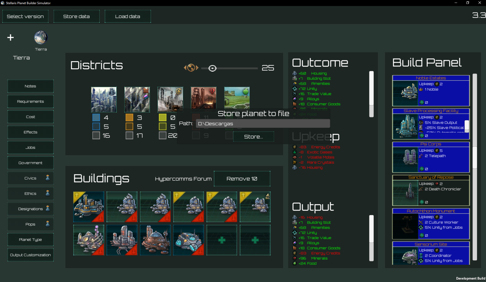
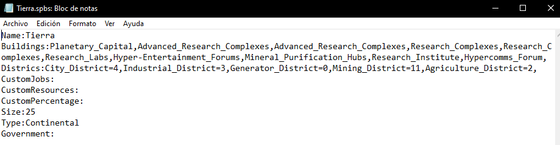
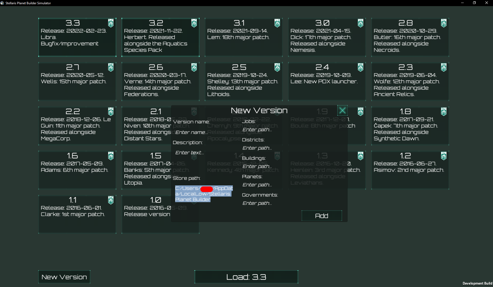
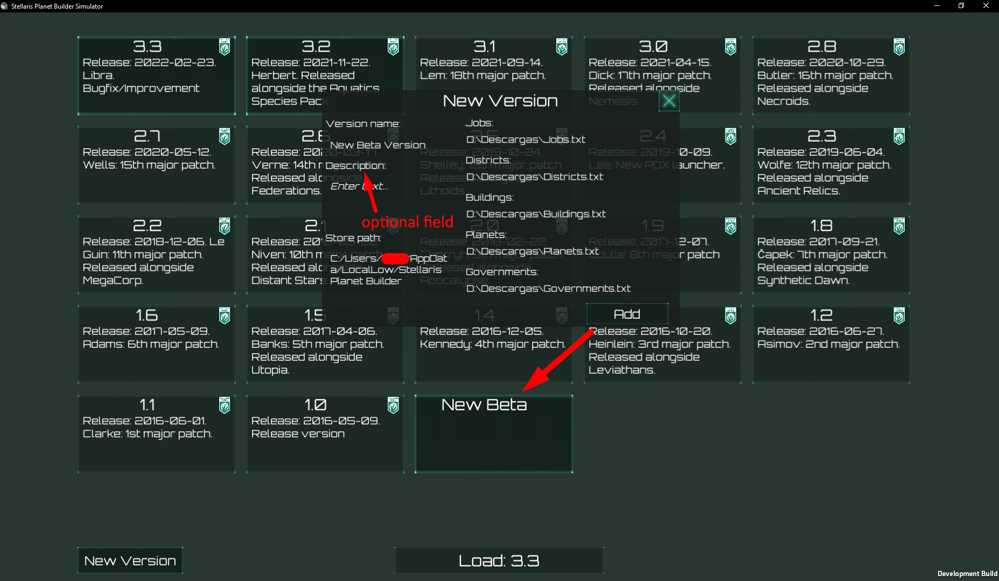
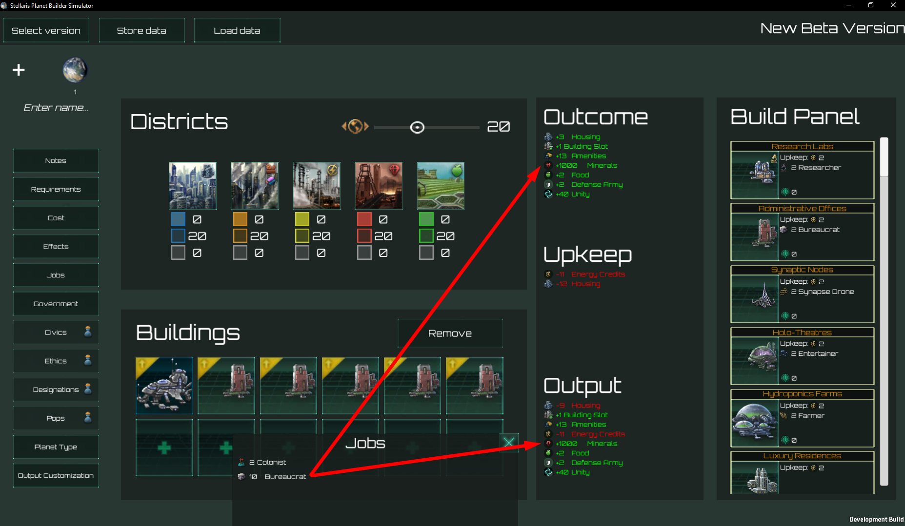

Exported planets will be stored in the target folder with .spbs extension, which is a plain text
file you can access through any tipical text editor.

Result file will be like this output:

By default, you can access files from custom version in
C:/Users/[YOUR_USERNAME]/AppData/LocalLow/Stellaris Planet Builder Simulator/Stellaris Planet
Builder Simulator in Windows.
For Linux and MAC users, you can find this path in the new
version panel.

If you open that path, you can see a custom folder, initially empty. When you create a new version,
it will be stored in ./custom/[VERSION_NAME] folder and each file referenced in the new version
panel will be copied there.

Note: file extension must be .txt
Note: files names must be the same as required in each field.
Now bureaucrat jobs produce 100 minerals for free! :)

You can see each input file format expected by app in
Drive Sheet Dataset.